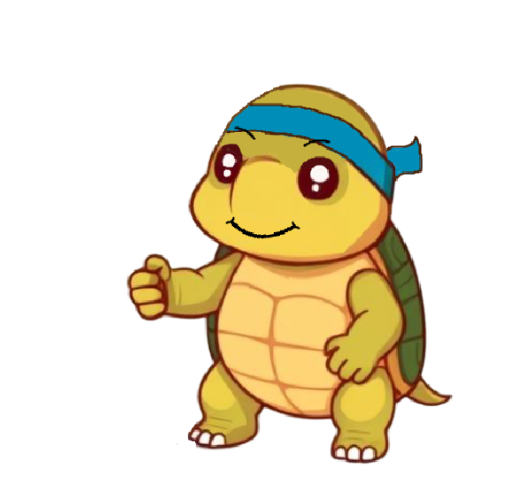
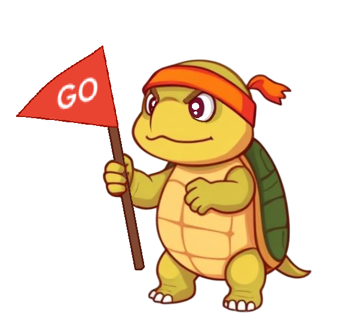
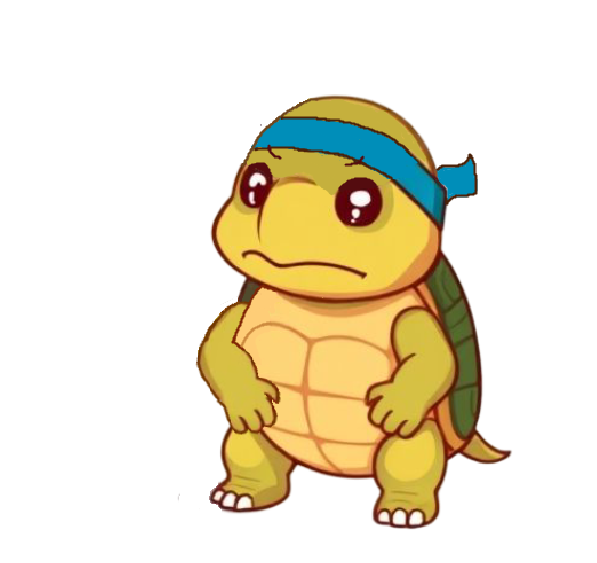

Welcome to the World of Miles 🐢
More than a tracker—he's your shell-donning, habit-hustling, slow-club champion.
📖 The Book of Miles
🐢 Moodboard of a Tortoise



What is Miles, Really?
A sleek habit tracker wrapped in warmth, whimsy, and a tortoise’s wisdom.
- Track Everything: Binary taps, measurable progress, daily and total targets—if it’s a habit, Miles tracks it.
- See the Story Unfold: Crystal-clear stats, calendar heatmaps, milestone alerts, and yes—celebration certificates.
- Tailored to You: Light mode, dark mode, responsive design, offline-first—and blazing fast on any device.
- Celebrate Every Win: Trophy shelf, congratulations page, animations, and visual feedback that makes progress feel good.
- Yours & Yours Alone: No servers, no snooping, no stress. Your data lives on your device—and nowhere else.
Behind the Shell: The Creators
Miles started as a spark—an idea dreamt up by one human with a love for thoughtful design and delightful details. With Microsoft Copilot by their side (and a few creative cameos from ChatGPT, Gemini, and Grok), that spark turned into a warm, whimsical habit tracker powered by persistence, pixels, and a tortoise full of encouragement.
🎉 Join the Slow Club
If you believe in small wins, long roads, and tortoises with ambition—you're already one of us.
Become a Member